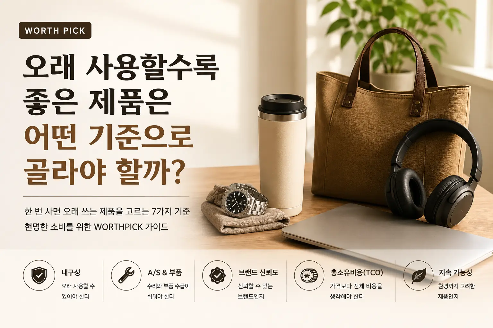

오래 사용할수록 좋은 제품은 어떤 기준으로 골라야 할까?

- 오래 쓰기 좋은 제품은 단순히 가격이 비싼 제품이 아니라, 사용 기간 동안 만족도가 유지되는 제품입니다.
- 구매 전에는 내구성, 수리 가능성, 부품 수급, 사용 빈도, 총소유비용을 함께 봐야 합니다.
- WORTHPICK이 생각하는 좋은 소비는 “싸게 샀다”보다 “오래 만족했다”에 가까운 선택입니다.
좋은 제품의 기준은 가격이 아닙니다
물건을 살 때 가장 먼저 보게 되는 것은 가격입니다. 같은 기능처럼 보이는 제품이 2만 원, 5만 원, 10만 원으로 나뉘어 있으면 대부분의 사람은 자연스럽게 “가성비가 좋은 제품은 무엇일까?”를 고민합니다. 그런데 실제로 오래 사용해보면 처음 가격보다 더 중요한 요소들이 보입니다.
처음에는 저렴해서 만족스러웠던 제품이 몇 달 만에 고장 나거나, 사용감이 불편해서 손이 가지 않거나, 소모품을 구하기 어려워 결국 다시 사야 하는 경우가 있습니다. 반대로 처음에는 조금 비싸게 느껴졌지만 몇 년 동안 안정적으로 사용하면서 오히려 돈을 아꼈다고 느끼는 제품도 있습니다.
WORTHPICK이 말하는 좋은 제품은 단순히 “비싼 제품”이 아닙니다. 또한 무조건 “가장 저렴한 제품”도 아닙니다. 중요한 것은 내가 실제로 사용하는 기간 동안 얼마나 안정적으로, 편하게, 만족스럽게 쓸 수 있느냐입니다.
총소유비용으로 보면 선택이 달라집니다
제품을 고를 때 꼭 알아두면 좋은 개념이 있습니다. 바로 총소유비용, 즉 TCO입니다. 총소유비용은 제품을 살 때 낸 가격만 보는 것이 아니라, 사용하는 동안 들어가는 모든 비용을 함께 보는 방식입니다.
예를 들어 3만 원짜리 제품을 1년에 한 번씩 바꿔야 한다면 5년 동안 총 15만 원이 들어갑니다. 반면 8만 원짜리 제품을 5년 동안 계속 쓸 수 있다면 처음 가격은 더 비싸지만 장기적으로는 더 저렴한 선택이 될 수 있습니다. 여기에 고장으로 인한 불편, 재구매에 쓰는 시간, 품질 문제로 생기는 스트레스까지 고려하면 차이는 더 커집니다.
| 구분 | 처음 가격 | 교체 주기 | 5년 기준 실제 비용 | 만족도 |
|---|---|---|---|---|
| 저가 제품 | 30,000원 | 1년 | 150,000원 | 고장·재구매 스트레스 가능 |
| 오래 쓰는 제품 | 80,000원 | 5년 이상 | 80,000원 | 안정적인 사용감 유지 |
물론 모든 제품을 비싸게 살 필요는 없습니다. 자주 쓰지 않는 제품이나 유행을 많이 타는 제품은 합리적인 가격대가 더 나을 수 있습니다. 하지만 매일 쓰는 제품, 고장 나면 불편한 제품, 오래 사용할수록 손에 익는 제품이라면 총소유비용 관점에서 보는 것이 훨씬 현명합니다.
오래 쓰기 좋은 제품의 7가지 기준
1. 내구성이 검증되었는가
오래 쓰는 제품의 첫 번째 기준은 내구성입니다. 내구성은 단순히 튼튼해 보이는 디자인이 아니라 실제 사용 환경에서 버틸 수 있는 구조와 소재를 말합니다. 특히 매일 손이 닿는 제품일수록 마감, 연결 부위, 힌지, 버튼, 케이블, 손잡이 같은 부분을 확인해야 합니다.
제품 상세페이지에 “튼튼함”이라는 표현이 있다고 해서 모두 내구성이 좋은 것은 아닙니다. 실제 후기에서 같은 부위가 반복적으로 고장 난다는 이야기가 있는지, 장기 사용 후기가 있는지, 소재가 쉽게 벗겨지거나 변색되는지 확인하는 것이 좋습니다.
2. 수리와 A/S가 가능한가
좋은 제품은 고장 나지 않는 제품이기도 하지만, 고장 났을 때 수리할 수 있는 제품이기도 합니다. 아무리 좋은 제품이라도 사용하다 보면 문제가 생길 수 있습니다. 이때 공식 A/S가 가능한지, 수리 비용이 지나치게 비싸지 않은지, 고객센터 연결이 쉬운지가 중요합니다.
특히 가전, 전자제품, 의자, 가방, 시계, 생활용품처럼 오래 쓰는 제품은 구매 전 A/S 정책을 확인하는 것이 좋습니다. “무상 보증 1년”이라는 문구만 보는 것이 아니라 보증 이후 유상 수리가 가능한지도 함께 확인해야 합니다.
3. 부품과 소모품을 구하기 쉬운가
오래 쓰는 제품은 본체만 튼튼해서는 부족합니다. 필터, 배터리, 패드, 고무링, 날, 충전 케이블, 교체 부속 같은 소모품을 계속 구할 수 있어야 합니다. 본체는 멀쩡한데 소모품이 단종되어 제품을 버려야 하는 경우가 생각보다 많습니다.
공기청정기, 정수기, 청소기, 전동공구, 면도기, 프린터, 주방용품 등은 소모품 공급 여부가 매우 중요합니다. 구매 전에는 “이 제품의 필터나 부품을 2~3년 뒤에도 쉽게 살 수 있을까?”를 한 번 생각해보는 것이 좋습니다.
4. 사용 빈도와 생활 패턴에 맞는가
아무리 좋은 제품이라도 내 생활에 맞지 않으면 좋은 제품이 아닙니다. 예를 들어 고급 커피머신을 샀지만 관리가 번거로워 거의 쓰지 않는다면 그 제품은 나에게 가치 있는 선택이 아닐 수 있습니다. 반대로 매일 사용하는 의자, 키보드, 가방, 텀블러, 충전기 같은 제품은 조금 더 신중하게 골라도 충분히 가치가 있습니다.
제품을 고를 때는 “이 제품이 좋은가?”보다 “내가 이 제품을 얼마나 자주, 어떤 방식으로 사용할 것인가?”를 먼저 생각해야 합니다. 사용 빈도가 높을수록 품질에 투자할 가치도 커집니다.
5. 디자인이 오래 질리지 않는가
오래 쓰는 제품은 디자인도 중요합니다. 유행이 강한 디자인은 처음에는 눈에 띄지만 시간이 지나면 쉽게 질릴 수 있습니다. 반면 단순하고 균형 잡힌 디자인은 오랜 시간 사용해도 부담이 적습니다.
특히 가구, 가방, 시계, 가전, 데스크 용품처럼 눈에 자주 보이는 제품은 너무 과한 디자인보다 주변 환경과 잘 어울리는 제품이 오래 갑니다. 좋은 디자인은 화려함보다 지속성에 가깝습니다.
6. 브랜드 신뢰도와 사용자 후기가 충분한가
브랜드가 전부는 아니지만, 오래 쓰는 제품에서는 브랜드 신뢰도가 중요한 기준이 될 수 있습니다. 오랫동안 제품을 만들어온 브랜드는 품질 관리, 부품 공급, A/S 체계가 상대적으로 안정적인 경우가 많습니다.
다만 유명 브랜드라고 무조건 좋은 것은 아닙니다. 같은 브랜드 안에서도 제품군별 품질 차이가 있을 수 있습니다. 따라서 브랜드명만 보고 결정하기보다 실제 사용자 후기, 장기 사용 후기, 고장 사례, 교환·반품 경험을 함께 확인하는 것이 좋습니다.
7. 환경과 지속 가능성까지 고려했는가
오래 쓰는 제품을 고르는 것은 경제적인 선택일 뿐 아니라 환경적인 선택이기도 합니다. 자주 사고 버리는 제품은 쓰레기를 늘리고, 다시 생산하고 배송하는 과정에서 자원도 더 많이 사용됩니다.
내구성이 좋은 제품, 수리 가능한 제품, 부품 교체가 가능한 제품을 선택하면 불필요한 소비를 줄일 수 있습니다. WORTHPICK이 오래 쓰는 제품을 중요하게 보는 이유도 여기에 있습니다. 좋은 소비는 나에게도 좋고, 환경에도 부담을 덜 주는 방향이어야 합니다.
저렴한 제품과 오래 쓰는 제품의 차이
저렴한 제품이 항상 나쁜 것은 아닙니다. 일시적으로 필요한 제품, 사용 빈도가 낮은 제품, 취향이 자주 바뀌는 제품은 저렴한 선택이 더 합리적일 수 있습니다. 문제는 오래 써야 하는 제품까지 가격만 보고 고를 때 발생합니다.
| 기준 | 저렴한 제품 중심 선택 | 오래 쓰는 제품 중심 선택 |
|---|---|---|
| 구매 기준 | 처음 가격이 낮은지 | 사용 기간 동안 가치가 유지되는지 |
| 장점 | 초기 부담이 적음 | 만족도와 안정성이 높음 |
| 단점 | 교체 비용과 불편이 생길 수 있음 | 초기 가격이 높게 느껴질 수 있음 |
| 추천 제품군 | 단기 사용품, 유행성 제품, 소모성 제품 | 매일 쓰는 제품, 수리 가능한 제품, 고장 시 불편한 제품 |
결국 핵심은 제품의 성격에 따라 기준을 다르게 적용하는 것입니다. 모든 제품에 높은 비용을 쓰는 것도 현명하지 않고, 모든 제품을 최저가로만 고르는 것도 현명하지 않습니다.
오래 쓰면 만족도가 높은 제품군
매일 몸에 닿는 제품
의자, 매트리스, 신발, 가방, 의류, 안경처럼 몸에 직접 닿는 제품은 품질 차이가 생활 만족도에 바로 영향을 줍니다. 이런 제품은 단순한 가격 비교보다 착용감, 소재, 내구성, 수선 가능성을 보는 것이 좋습니다.
고장 나면 생활이 불편한 제품
냉장고, 세탁기, 청소기, 공유기, 충전기, 멀티탭, 조명 같은 제품은 고장 시 불편이 큽니다. 특히 전기와 연결되는 제품은 안전성까지 고려해야 하므로 지나치게 저렴한 제품만 찾기보다 인증 여부와 브랜드 신뢰도를 확인하는 것이 좋습니다.
한 번 사면 오래 두고 쓰는 제품
책상, 식탁, 수납장, 조리도구, 공구, 캐리어처럼 오래 보관하며 사용하는 제품은 처음 선택이 중요합니다. 구조가 단순하고 수리 또는 부품 교체가 쉬운 제품일수록 오래 사용할 가능성이 높습니다.
사용할수록 손에 익는 제품
키보드, 마우스, 펜, 카메라, 이어폰, 주방칼처럼 개인의 사용 습관과 맞아야 하는 제품은 오래 사용할수록 손에 익습니다. 이런 제품은 단순 스펙보다 실제 사용감이 중요합니다.
구매 전 자주 하는 실수
실수 1. 최저가만 보고 결정한다
최저가는 매력적이지만, 제품의 전체 가치를 보여주지는 않습니다. 배송비, 소모품 가격, 수리 가능성, 교체 주기를 함께 봐야 합니다.
실수 2. 리뷰 개수만 보고 믿는다
리뷰가 많다고 항상 좋은 제품은 아닙니다. 중요한 것은 리뷰의 내용입니다. 특히 “몇 개월 사용 후”, “1년 사용 후”와 같은 장기 후기를 찾아보는 것이 좋습니다.
실수 3. 내 생활 패턴을 고려하지 않는다
누군가에게 좋은 제품이 나에게도 좋은 제품은 아닙니다. 집 크기, 사용 빈도, 관리 성향, 보관 공간, 가족 구성에 따라 적합한 제품은 달라집니다.
실수 4. 관리 난이도를 확인하지 않는다
좋은 제품처럼 보여도 관리가 너무 어렵다면 오래 사용하기 힘듭니다. 세척, 보관, 소모품 교체가 쉬운지 확인해야 합니다.
실수 5. 디자인만 보고 선택한다
디자인은 중요하지만, 디자인만으로 결정하면 사용성이 부족할 수 있습니다. 오래 쓰는 제품은 보기 좋은 것과 쓰기 좋은 것 사이의 균형이 필요합니다.
구매 전 체크리스트
- 이 제품을 일주일에 몇 번 사용할까?
- 고장 났을 때 수리할 수 있을까?
- 소모품이나 부품을 쉽게 구할 수 있을까?
- 비슷한 제품보다 비싼 이유가 명확한가?
- 장기 사용 후기가 충분한가?
- 관리와 청소가 쉬운가?
- 내 생활 공간과 사용 습관에 맞는가?
- 1년 뒤에도 이 디자인이 마음에 들까?
- 구매 가격 외에 추가 비용은 얼마나 들까?
- 이 제품을 다시 사도 만족할 것 같은가?
WORTHPICK이 생각하는 가치 있는 소비
WORTHPICK의 기준은 단순합니다. 세상에는 비싼 제품도 많고, 저렴한 제품도 많습니다. 하지만 진짜 좋은 제품은 가격표만으로 판단하기 어렵습니다. 오래 사용해도 만족이 유지되는지, 내 생활에 실제로 도움이 되는지, 불필요한 교체를 줄여주는지가 중요합니다.
가치 있는 소비는 무조건 아끼는 소비가 아닙니다. 필요한 곳에는 제대로 쓰고, 필요하지 않은 곳에는 과하게 쓰지 않는 균형입니다. 어떤 제품은 저렴하게 사는 것이 맞고, 어떤 제품은 처음부터 오래 쓸 수 있는 제품을 고르는 것이 더 나은 선택입니다.
앞으로 WORTHPICK은 단순히 “이 제품이 좋다”라고 말하기보다, 왜 좋은지, 어떤 사람에게 맞는지, 오래 쓸 만한 기준을 갖췄는지까지 함께 정리하려고 합니다. 좋은 선택은 우연히 만들어지는 것이 아니라, 기준을 가지고 비교할 때 더 가까워집니다.
자주 묻는 질문 FAQ
Q1. 비싼 제품이 항상 오래 쓰기 좋은 제품인가요?
아닙니다. 가격이 높아도 내구성, A/S, 부품 수급, 사용 목적과 맞지 않으면 오래 쓰기 어렵습니다. 가격은 하나의 참고 요소일 뿐입니다.
Q2. 오래 쓰는 제품을 고를 때 가장 먼저 봐야 하는 것은 무엇인가요?
사용 빈도를 먼저 봐야 합니다. 매일 사용하는 제품이라면 내구성과 사용감을 더 중요하게 보는 것이 좋고, 가끔 쓰는 제품이라면 과도한 지출을 피하는 것이 좋습니다.
Q3. 총소유비용은 왜 중요한가요?
처음 구매 가격이 저렴해도 자주 고장 나거나 소모품 비용이 많이 들면 결과적으로 더 비싼 선택이 될 수 있기 때문입니다.
Q4. 리뷰를 볼 때 무엇을 중점적으로 확인해야 하나요?
구매 직후의 칭찬보다 장기 사용 후기를 확인하는 것이 좋습니다. 특히 고장 부위, A/S 경험, 소모품 비용, 사용감 변화에 대한 후기가 중요합니다.
Q5. 브랜드 제품을 사는 것이 안전한가요?
브랜드는 A/S와 품질 관리 측면에서 장점이 있을 수 있지만, 브랜드만으로 결정해서는 안 됩니다. 같은 브랜드 안에서도 제품별 완성도 차이가 있습니다.
Q6. 저렴한 제품은 사면 안 되나요?
그렇지 않습니다. 사용 빈도가 낮거나 단기간 필요한 제품은 저렴한 제품이 더 합리적일 수 있습니다. 중요한 것은 제품의 목적에 맞는 기준을 적용하는 것입니다.
Q7. 오래 쓰는 제품을 고르면 환경에도 도움이 되나요?
네. 제품을 자주 교체하지 않으면 폐기물과 불필요한 생산·배송을 줄일 수 있습니다. 수리 가능한 제품을 선택하는 것도 지속 가능한 소비에 도움이 됩니다.
Q8. 제품을 사기 전 마지막으로 확인할 것은 무엇인가요?
“이 제품을 1년 뒤에도 만족하며 사용할 수 있을까?”라는 질문입니다. 이 질문에 확신이 없다면 조금 더 비교해보는 것이 좋습니다.